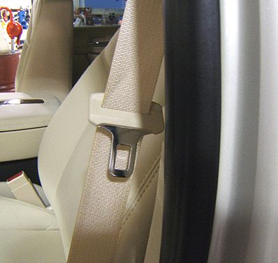
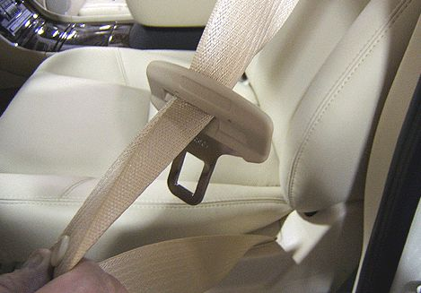
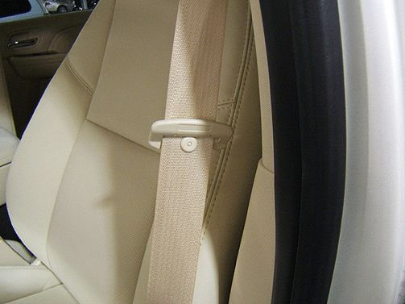
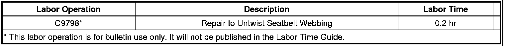

Restraints/Interior - Front Seat Belt Twisted
TECHNICALBulletin No.: 07-09-40-001A
Date: May 14, 2009
Subject: Front Seatbelt Latch Plate Reversed, Front Seatbelt Twisted (Perform Repair to Untwist Seatbelt)
Models:
2008-2009 Buick Enclave
2007-2009 Cadillac Escalade, Escalade ESV, Escalade EXT
2007-2009 Chevrolet Avalanche, Silverado, Suburban, Tahoe
2009 Chevrolet Traverse
2007-2009 GMC Acadia, Sierra, Yukon, Yukon XL, Yukon Denali, Yukon Denali XL
2007-2009 Saturn OUTLOOK
Supercede:
This bulletin is being revised to add the Traverse model and the 2009 model year. Please discard Corporate Bulletin Number 07-09-40-001 (Section 09 - Restraints).
Condition

Some customers may comment that the seatbelt latch plate is reversed on the belt webbing or that they have to twist the webbing before buckling the seatbelt. This condition can be visually verified by inspecting the location of the latch plate tongue. If the tongue is between the webbing and the pillar post, it is reversed.
Correction
Do NOT replace the seatbelt retractor for this condition. To correct this condition, perform the following repair.
1. Pull the majority of the belt webbing out of the retractor.

2. With the latch plate resting at its lowest point, take the webbing above the latch plate and fold the webbing over itself at a 45 degree angle. Pinch the folded portion between the thumb and forefinger.
3. Using the other hand, pull the latch plate up over the fold until past the doubled over section.

When in the correct location, the latch plate tongue will be between the webbing and the seat.
U.S. dealers: For additional information, search gmtraining.com's Web Video Library for the May 2007 Emerging Issues video (course #10207.05D).
Warranty Information

For vehicles repaired under warranty, use the table above.

Disclaimer